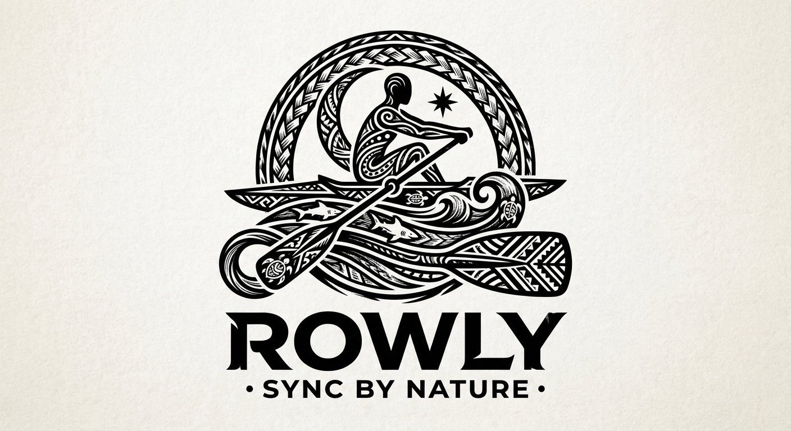
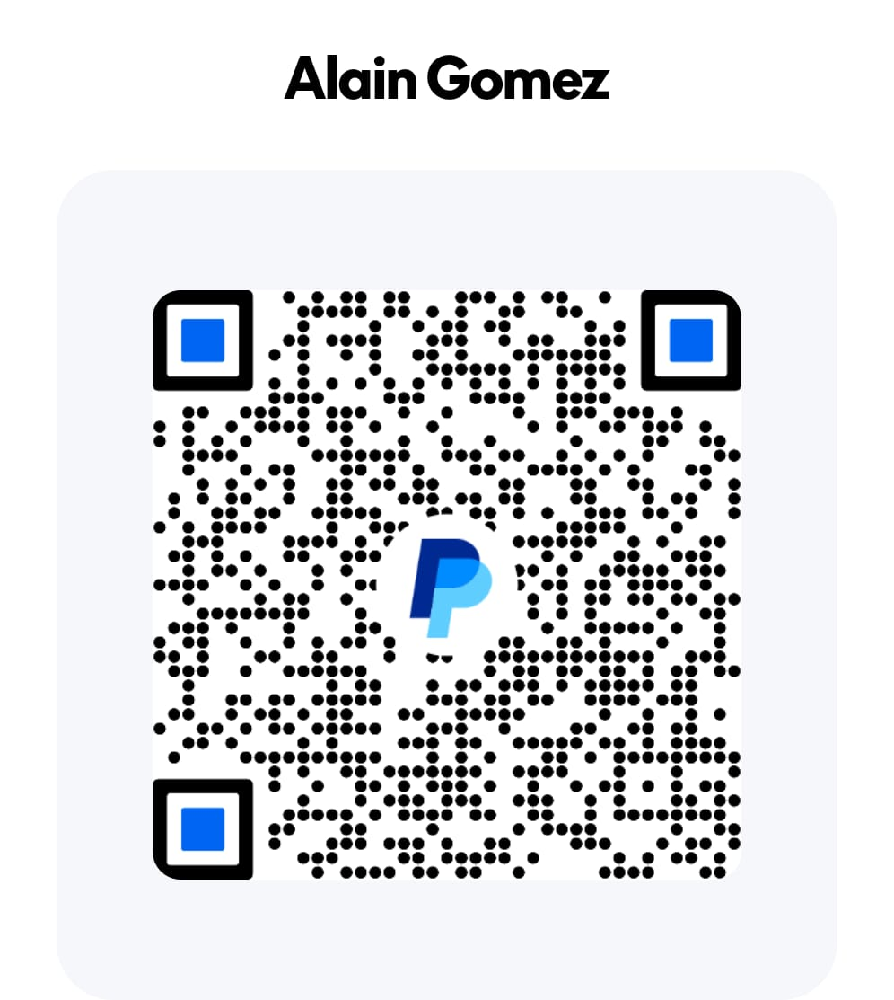

ROWLY
An open-source rowing companion for Android that tracks your strokes, speed and distance — on the water or on the ergometer — and guides you through structured trainings with voice announcements, so your eyes stay on the water. The complete source code is public: inspect it, build it yourself, or contribute.
About the developer
I enjoy creating handy solutions to everyday problems and filling the gaps where existing tools fall short. Turning an idea into something useful and making everyday tasks a little easier is what drives me.
Your support helps me keep building, experimenting, and sharing practical solutions. Every contribution is a small encouragement to keep creating—and a way to be part of the journey.
Support the project
Rowly is free and open source — no ads, no subscriptions, no tracking. Development runs on spare time and enthusiasm.
If Rowly is useful to you, you can fund its development via PayPal.

Disclaimer
Rowly is provided “as is”, without warranty of any kind, express or implied. The app is a training aid, not a safety device: it does not replace proper judgement, supervision or safety equipment on the water. To the maximum extent permitted by law, the developer accepts no responsibility or liability for any injury, accident, loss, damage, or other issue — direct or indirect — arising from the use or misuse of this app or the information it displays. Use of the app is entirely at your own risk. GPS and sensor readings are estimates and may be inaccurate; do not rely on them for navigation or safety-critical decisions.